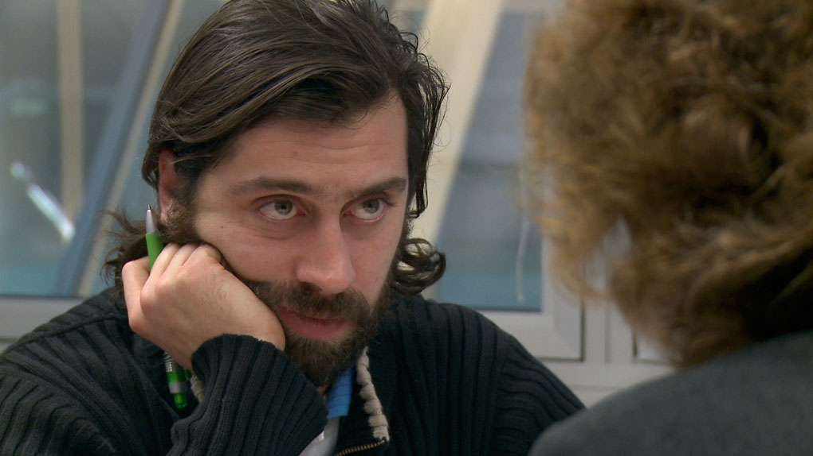

Review: Become a German (in just under 650 hours)
No, not you, unless you’re interested. If so, then it’s time to sharpen your pencils, place them neatly in one of Germany’s ubiquitous pencil cases, and get ready to go back to school.
{kind=link}
Let’s rewind a bit: For a long time, Germany refused to acknowledge itself as a “land of immigration”. The bulk of recent immigration came from post-World War II guest worker programs which were initially meant to be temporary, but many migrants stuck around. Their children and children’s children – the second and third generations – were born in Germany but continued to face challenges in regards to integration. They struggled socioeconomically and educationally, lacked German language proficiency, and often lived in parallel societies. In addition, Germany’s population was aging and fertility rates were declining.
So at the turn of the 21st century, Germany also made a sharp turn where immigration policy was concerned. Integrating “non-ethnic” immigrants and their children (and recruiting highly-skilled immigrants) became a priority. A birthplace citizenship provision was introduced, a national integration plan created, and a “Federal Commissioner for Migration, Refugees, and Integration” established. Language became the focal point of integration efforts: the majority of third country nationals (those from outside of the EU ) are now required to take over 600 hours of state-funded integration courses.
Which brings us back to “Become a German” or Werden Sie Deutscher, a new documentary that follows an integration course in Berlin over the course of 10 months. We watch as the class – whose “stars” come from countries like Uruguay, Bangladesh, Bulgaria, and Turkey – wades its way through simulated spats with neighbors and gay marriage debates in the classroom to real-life job search trials and mundane subway rides.
{kind=link}
Cultural Orientation – Rules and Behaviors. “Time is money”…”First work, then play”.
As with any documentary, scenes are cut and pasted together to elicit the most laughs and cringe-worthy moments. Since this is Germany, at least half of the movie zooms in on bureaucracy and rules. You must never throw out an important piece of paper. You must clean up after your dog. You must ride your bike in the right direction of the bike lane, recites a Russian student. The audience chuckles. First work, then… chants the teacher. The audience groans. Do you know any examples of German humor? asks the teacher. Uhhh, fumbles the Japanese student. 10 seconds go by. I’m still thinking, he mutters and scratches his head. The audience roars. Please wait outside, instructs a bureaucrat to a family standing outside Berlin’s foreign resident center in the middle of winter. The audience gasps.
{kind=link}
The bureaucracy focus is exaggerated, considering that only 45 of the 645 required course hours are delegated to “orientation”. Yet, despite how ridiculous or boring German bureaucracy may seem, it’s a necessary system to understand and be able to navigate when living here. Just like regular school, these courses are not all about grades and memorization. They’re about life skills.
Though far from perfect, these courses are also a commendable effort in giving the newly arrived a fighting chance. The United States proudly waves its “multiculturalism loving melting pot of immigration” banner far and wide, but where is its federal office of immigrant integration and state-funded language courses? The adult immigrants I volunteered with in the US came to English class every day after work of entirely their own volition and out of their own pockets.
This film poses a host of larger questions about integration governance: What responsibility do countries have in welcoming newcomers and preparing them for their new society? What should (or shouldn’t) integration courses be teaching besides language? What does it really mean to be “integrated”? It also ignores some important questions: How do courses handle students with varying levels of education and literacy in their native tongues? How are regular schools and the media addressing migration to promote intercultural understanding on the side of “natives”? How must German society continue to evolve to truly meet their new-found claim as a “land of immigration”?
Integration is, after all, a two-way street. Let’s just hope we’re all riding in the right direction.
– By Sophia Burton
“Werden Sie Deutscher” is currently playing in select cities around Germany.
Photo sources: Spiegel and Werden Sie Deutscher
Sophia,
good film and even better commentary!